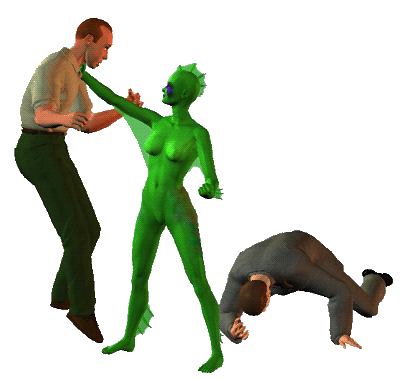
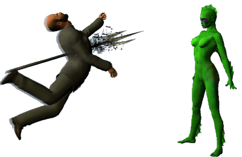
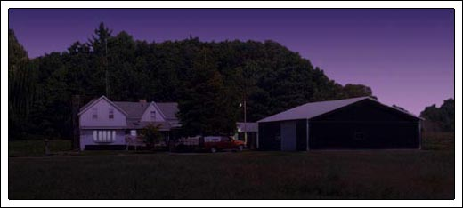

Crewman #1 (Polishing a machine gun) America does love its guns, doesn't it?
Crewman #2 (Unpacking a case of grenades) And I love its TV shows - hurry, it's almost time for "Ancient Space"
Crewman #1 Keep your mind on the job
Crewman #2 With the money we make from this, let's buy our whole town back home
Crewman #1 Are you joking? - I will visit cousin in Vegas, buy lots of pretty American girls
Crewman #2 There are pretty girls back home
Crewman #1 Yes, but American girls are easy
Darkfin Just how easy do you think we are?
Crewman #1 (Aiming his gun at her) God save us, what are you?
Darkfin I ask myself that on occasion
Crewman #2 KILL IT, KILL IT
Crewman #1 OH, wait a minute, wait a minute... captain said something about a show filming on the dock today - "Sigma Seven" I think
Crewman #2 SIGMA SEVEN? - I LOVE SIGMA SEVEN
Crewman #1 (Smirking at Darkfin) I suggest you turn around, forget what you saw here or I'll have the studio cancel your contract... understand?
Darkfin Is that a wise move before sweeps?
Crewman #2 Hey, can you get me BogRee's autograph?
Darkfin Sorry... how about I do my best imitation of R'xal?
Darkfin (Picking him up by the neck) I want you to do me a favor

Crewman #1 PLEASE DON'T KILL ME
Darkfin (Placing him at the ship's intercom) Call for help
Crewman #1 (Gasping) I can't... I can't breathe
Darkfin (Tightening her hold) Then CALL... FOR... HELP
Crewman #1 (Into the intercom) INTRUDER... INTRUDER, DECK C... HELP ME
Darkfin Hello, boys - I'm bored... wanna play?
Crewman #3 (Searching) WHERE DID SHE GO?
Crewman #4 (Kicking over a barrel) I DON'T KNOW
Darkfin (Waving) Excuse me, hi... up here!
Darkfin NICE MOVE, CONGRATULATIONS
Darkfin My move is better
Captain What is going on here? - stop being cowards, turn around, and fight!
Darkfin (Smiling) Maybe you should turn around
Captain (Doing so) Huh?

Crewman #4 PLEASE, WE BEG YOU, LET US GO
Darkfin Do as your captain said... stop being cowards and fight!
Darkfin (Calling down after him) The water is a bit cold tonight, don't swim too long
Darkfin (Strapping it to her wrist) Not a bad time for regular humans, not a good time if I stand any chance against the cloak freaks

Ona Rosa (Half smile) Craig isn't just playing with the kids, he's actually trying to win
Anita (Sipping a Corona Light) Yep, that's Crunch, he's always looking to score... speaking of which, where's your husband?
Ona Rosa (Scowling) He's staying late for a department meeting, he'll be here shortly
Anita Uh-huh
Ona Rosa Nita, don't start
Anita I'm not starting anything... that hasn't already been started
Hector Your mom needs some help in the kitchen, girls!
Ona Rosa We'll be right in, Tio
Anita Get on in and get cleaned up, supper is almost ready - Crunch, go help Oni with the salad
Craig (All smiles) My pleasure
Anita (Following in after him) Yeah, I'll bet
Anita (Bringing out the rolls) Don't lift a finger to help, Dad
Frank (Now glaring at Anita) I can't lift my arm, let alone a finger
Craig You know, Frank - I could talk to my buddy at the gym, he's a professional trainer, I'm sure he'd be more than happy to recommend some exercises for you
Frank Another time, maybe - will someone let Bucko in?
Ona Rosa (Rushing to the back door) I'll get him
Anita (Banging down some plates) Do we have to have the fucking dog at the dinner table? - he's filthy!
Carmen (Entering the room with a casserole) And your mouth isn't? - Nita, SIT
Frank (Struggling to pat him) There's my boy, there's my boy!
Ona Rosa (Taking a seat) It all looks delicious
Craig (Looking at Ona Rosa) Yes, very tasty
Carmen Thank you - Hector, please say grace for us
Everyone clasps hands except for Frank who begrudgingly touches his wife's hand with his fingers.
Hector
Drinking when we are not thirsty
and making love at all seasons
madam: that is all there is
to distinguish us from
the other animals
Frank What the hell does that mean?
Anita Maybe Bucko can explain it to you
Frank It doesn't mention the Lord, it doesn't mention food...
Carmen It was lovely, Hector, gracias
Hector It's by Pierre-Augustin de Beaumarchais
Frank I don't want to hear a freaky Frenchman's poem at my table!
Anita (Shoveling in a mouth full of vegetables) If you heard it in the bathroom, would it make a difference?
Carmen NITA
Craig (Holding up his glass) I'd like to make a toast... to a wonderful meal and to the extremely kind and extremely beautiful Fiore women, CHEERS
Ona Rosa For that, Craig, you are getting an extra slice of my cherry pie
Hector I had an interesting meeting today with a lovely young woman
Anita Was it in the vertical or the horizontal position?
Anita Hey, what's wrong with a geometry question over mixed greens?
Hector Actually, it was an interview
Frank Hallelujah, you're finally getting a real job!
Hector A NEWS interview, Francis - Morrigan McBride is doing a piece on the county correctional program
Anita (Throwing down her napkin) Aw, man!
Ona Rosa What's the matter, Sis, did she turn you down?
Anita I can't stand her, she's freaking everywhere - sticking her nose in where it doesn't belong - we have enough problems trying to figure out Aleta...
Hector Well, she seems like a sweet, well-informed, respectable journalist - she asked very intelligent questions
Anita You just want to bang her, you old goat!
Carmen Ay, m'hija, por favor
Frank Did someone forget to feed the goats?
Hector I have a chance of banging her long before you do
Craig (Laughing and giving Hector a high-five) NICE
Anita Whatever, I just wish she'd high tail it back to Montana or wherever it is she came from
Frank Montanans - bastards, all of them
Anita Dad, you're drooling on the chipotle
Ona Rosa So, Craig, any new leads on what exactly happened that night at the museum?
Craig Not really, since the necklace - most of it - was recovered...
Anita Thanks to US
Hector And, don't forget, Ms. McBride
Craig It's technically out of our hands now - we're still doing spot checks for the statue but I am more than certain it's long gone
Carmen Poor Lydia returned to work yesterday, she is just devastated by the whole thing
Frank That woman should be fired!
Ona Rosa Aren't you being a little harsh, Dad?
Frank They're just coddling her because of her condition - Carmie, butter me another roll...
Frank AND because she's a WOMAN - if it were a healthy white man in her shoes, his ass would be tossed like a pizza
Hector If it were a healthy white man in her shoes, I would hope he'd be wearing matching eye shadow
Craig (High-fiving Hector) Tapia scores again!
Carmen Unfortunately, there are those at the museum who feel the same way
Ona Rosa What about you, Mom?
Carmen It wasn't her fault, no one could've predicted what happened - besides, Lydia is my biggest supporter for enlarging the Chumash section, I don't want to lose her
Frank DAMMIT, CARMIE, MY ROLL
Anita (Holding her mother back again) GET... IT... YOUR... SELF
Frank FINE
Anita Here, spare us the drama
Ona Rosa (Returning) That was Javier, he'll be here shortly - do you mind if he brings Shelby and her son with him?
Carmen Of course not, I'd love to have them, there's more than enough food!
Frank I DO NOT WANT THAT JIGABOO AT MY DINNER TABLE
Carmen SHH, the children might hear you!
Hector Francis, c'mon
Ona Rosa Geez, Dad, that's not right
Anita Look, I know the stroke addled half of your brain but THINK about what you're saying before you say it out loud!
Carmen His internal editor is gone
Anita STOP MAKING EXCUSES FOR HIM - FOR CHRIST'S SAKE, DAD, YOUR WIFE IS MEXICAN
Frank She's not black!
Anita So, is she a wetback? - is Oni part spic? - what am I?
Frank You're just a big dyke but at least you have the decency not to bring your deviant whores to the dinner table
Anita Note to self: bring deviant whores over for tamales next Tuesday
Ona Rosa Nita, don't exacerbate it
Hector At the turn of the century, Francis, ITALIANS... along with people of Irish, Polish, and Chinese heritage, were considered to be the dregs of society
Frank SHUDDUP AND GET A REAL JOB
Craig I'm 1/4 Estonian Jew, do I still get pie?
Anita (Looking at her pager) The pie, THANKFULLY, will have to wait - we're being called in on a Delta Code... let's move!
Craig (Jumping up) Ona Rosa, please thank your mother for me, dinner was enjoyable
Ona Rosa It was?
Craig The food was
Ona Rosa (Half smile) I'll save you some pie
Anita Oh, Captain, let's go!
Dan: Seagull guano - I've had spectacular results with it!
Morrigan Does it work for African Violets?
Austin CELEBRATE GOOD TIMES, COME ON - whatchy'all talking about?
Morrigan Bird poop and flowers
Austin Keep talking... once I leave the room
Morrigan Chickenshit!
Dan That's actually good for legumes
Austin Hey, Morey Eel, are you coming with to Techtonic? - Gracie promised me an all-disco set
Morrigan Sorry, Dallas, I need to stay and finish editing my story on the county correctional program
Austin Mmm, men behind bars, can I help?
Morrigan Another time, maybe... please tell Gracie I'll catch her gig this weekend
Austin (Leaving) Cool - hey, Danny, I suppose you don't want to go?
Dan They're having a Korean War retrospective on the History Channel tonight
Austin Aw damn, I forgot to set my VCR... LATER
Dan You should set your VCR, you might LEARN something!
Dan (Answering it) Yes... really? - uh-huh, will we be going live? - right, I'll tell her
Morrigan What's up?
Dan That was Benitez, apparently, something is happening at the dock with a Meer-A-Mar ship, Kylee's too far out of range, you need to go cover it - we'll be doing a live stand-up in 20 minutes
Morrigan (Jumping up) OH, GREAT
Dan And just say no to urea!
Morrigan (Halting) Excuse me?
Dan Never use urea-based nitrogen to feed African Violets, it gives them root burn
Craig Looks like our friend struck again
Anita (Carefully looking at one of the broken pipes) Mm-hmm
Craig I really did enjoy dinner tonight, thank you for inviting me
Anita You need to get out more
Craig I'm serious - my family never spoke at dinner, my ex-wife only talked about herself at dinner - this was GREAT
Anita I'm glad someone enjoyed it
Craig You really should cut your father some slack - his judgment might be a little off but he's been through a lot
Anita The stroke was 18 years ago, not 18 minutes ago - I am SICK and tired of people trying to excuse his horrific behavior and attitude on a tiny clot in his cerebrum
Craig You're lucky your father survived
Anita Am I?
Craig Lieutenant!
Anita Captain, don't make me replace you with a deviant whore at dinner next week
Craig (Taking a long look around) Well, I think we've seen everything we need to see here, let's head on back
Anita Hold on...
Craig What?
Anita (Trying to retrace the footsteps in the attack pattern) There's something... something not right about this time
Craig What do you mean? - it's the same MO
Anita Yeah, but slightly different - it's like... it's like she was PRACTICING for something
Morrigan (Coming up behind them) Practicing for what?